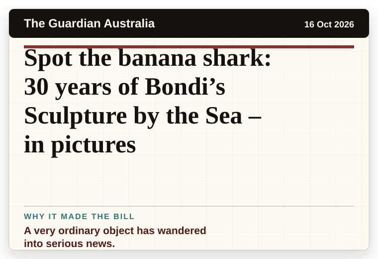
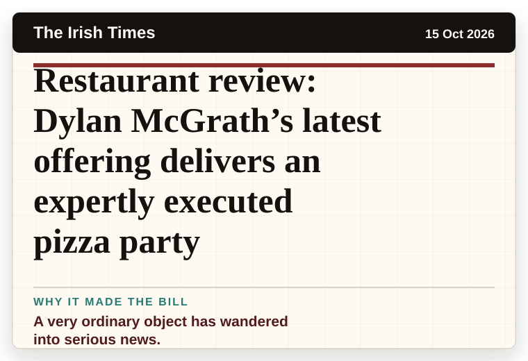

Daily Star Weird News
United Kingdom
NASA probe snaps '2.5-mile alien mothership' zooming past Sun at speed of light
A wonderfully specific detail has taken centre stage.
The latest daily picks, linked back to the original sources. Search the room, pick a source, or follow a headline out to the full story.
Record updated: 16 Oct 2026, 07:40 AM AEST
Showing 11 headline candidates from the refresh run completed on 16 Oct 2026, 07:40 AM AEST.
A wonderfully specific detail has taken centre stage.

A wonderfully specific detail has taken centre stage.

A mystery is doing a lot of work in a very small sentence.

The scale is doing deadpan comedy.

A mystery is doing a lot of work in a very small sentence.

The headline is already trying not to laugh.

The scale is doing deadpan comedy.

It has the shape of a tiny adventure reported with a straight face.

A mystery is doing a lot of work in a very small sentence.

A very ordinary object has wandered into serious news.

A very ordinary object has wandered into serious news.